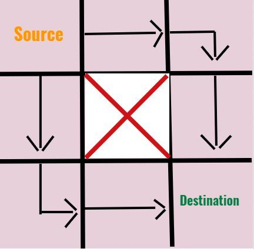

Problem 1: Munchy's Dazzling Cakewalk
Problem Statement
Before the storyline continues, Munchy left an easy question for the people.Dazzler and Munchy , both has to choose an integer between 1 and N, such that the sum of the chosen integers is exactly N.
How many possible ways are there such that the sum can be exactly N?
Input Format
* The first line contains T denoting the number of testcases.* The second line contains one integer N.
Constraints
* 1<=T<=100* 2<=N<=100000
Output Format
* Print one single integer denoting the total number of required ways.Sample Input 0
32
3
100000
Sample Output 0
12
99999
Explanation 0
* In the first testcase, both can choose 1 and 1 and it is the only way to sum up 2.* In the second testcase , the 2 ways are
* Munchy-2, Dazzler-1
* Munchy-1,Dazzler-2
Approach
It's easy to solve this problem since one can always pick an integer x and the other N-x integer.Here x lies between 0 and N(exclusive).
The equality x>0 and x < N must hold.
Therefore N-1 choices of x are there.
Code in Python
t=int(input()) while(t): t-=1 print(int(input())-1)
Problem 2: Dazzler the Puzzler
Problem Statement
As their Anna University Semester exams(not arrear exams)are getting nearby, Dazzler and Munchy decided to prepare for exams. Munchy was busy in some work, which is a mystery. Meanwhile Dazzler was stuck at a problem in a subject called RandomCodology. Help him to solve the problem.There are A number of 1's and B number of 2's. You can pick C (0<=C<=A) 1's and D (0<=D<=B) 2's, such that the sum of all elements is exactly equal to N.
If possible, print "YES" (without quotes), else print "NO" (without quotes)
Input Format
* The first line of the input contains a single integer T, denoting the number of test cases.* The first line of each test case consists of two spaced integers A, B and N respectively.
Constraints
* 1<=T<=100000* 0<=A,B<=100000000000
* Subtask 1 (30 Points) : A=0 (The Number of 1's will be equal to 0 )
* Subtask 2 (70 Points) : Original Constraints
Output Format
* Print a single line, "YES" if it is possible, else print "NO"Sample Input 0
31 5 11
5 1 11
0 0 0
Sample Output 0
YESNO
YES
Approach
We need to have atleast one 1 to make a number odd. So if the required number is a odd number then the value of A should be atleast one. else it is not possible.Then for all values of N (regardless its whether even or odd) it must satisfy a*1+b*2>=n. else its impossible
Code in Python
t=int(input()) for _ in range(t): a,b,n=map(int,input().split()) if(n%2==1): if(a==0): print("NO") else: if(a*1+b*2>=n): print("YES") else: print("NO") else: if(a*1+b*2>=n): print("YES") else: print("NO")
Problem 3: Munchy and Dazzler's New Girlfriend
Problem Statement
While Dazzler was busy solving a math problem, Munchy was feeling guilty of Dazzler's recent breakup and hence he decided to settle it by finding a new girlfriend for Dazzler. Therefore to select the perfect girl for him he decided to host a competition.The game consists of N girls standing in a circle numbered from 1,2...to N.At time Y=1 ,Munchy gives the 1st girl a ball.Then after every second,the ith girl passes the ball to the (i+1)th if i≠N,else if the ith girl is in the Nth position then she will pass it to the 1st girl again.
Formally, if N is 3,then the game follows as :
1.At the end of 1st second 1st girl receives the ball.
2.At the end of 2nd second 1st girl throws the ball to 2nd girl.
3.At the end of 3rd second 2nd girl throws the ball to 3rd girl.
4.At the end of 4th second 3rd girl throws the ball to 1st girl.........
The game continues like that.
Munchy is bored as the game goes on infinitely,so he stopped the game at Mth second and asked some Rth girl (where 1<=R<=N) the number of times she received the ball from the 1st second till that time.
Since Munchy needs that girl to win , he asks your help.
Input Format
* The first line consist of T denoting the number of testcases.* The second line consists of 2 space-separated 3 integers N,M,R.
Constraints
* 1<=T<=100000* 2<=N<=10^18
* 1<=M<=10^18
* 1<=R<=N
Output Format
* Print one line for each testcase consisting of the number of times the Rth girl had received the ball during the entire game upto Mth second.Sample Input 0
12 3 1
Sample Output 0
2Explanation 0
* At the end of 3rd second ,1st girl had received the ball two times,once during the 1st second from Munchy initially and one more time at the end of 3rd second from the 2nd girl.* Hence the answer is 2.
Approach
- For this problem let's define a lap as time taken to receive the ball from the Nth girl to the 1st girl.- So for M seconds, the number of required laps would be M/N(floor divison).
- Now every girl irrespective of the position would have received exactly the ball M/N times. Now what if there are seconds that doesn't contribute to laps?
- If M is 8 and N is 6, M/N gives 1 lap. But still there are 2 seconds left and the game will continue for that remaining seconds.
- The remaining seconds will be given by M%N which is the remainder of M when divided by N.
- The incomplete seconds will again start from the 1st girl and will end within N-1 th girl, since if it ends with Nth girl this will form a lap.
- Therefore the ball goes to each girl starting from 1st girl to M%N th girl.
- Check if the Rth girl is within this range.
- If yes, then answer is M/N + 1.
- Else, it is simply M/N.
Code in Python
t=int(input()) while(t): t-=1 n,m,r=map(int,input().split()) print(m//n+(r<=m%n))
Problem 4: Dazzler's String Bits
Problem Statement
You are given a binary string A consisting of '1's and '0's of length N.You can make any one of the operations given below any number of times(possibly zero)
1. Remove the first bit and append it at the last. Example : If "001001" is the string you can make it as "010010"
2. Remove the last bit and append it at the beginning. Example : If "010010" is the string you can make it as "001001"
You can make these operations even infinite time. After doing sufficient amount of operations, you will arrive at the required
string, where maximum length of consecutive '1's and maximum length of consecutive '0's should be maximum.
"101 000 100 1111" In this string maximum length of consecutive '1's is 4 (highlighted in the string)and maximum length of consecutive '0's is 3.
Print the maximum length of consecutive '0's and maximum length of consecutive '1's in that resultant string.
Input Format
* First line will contain T, number of testcases. Then the testcases follow.* The first line of each test case contains N.
* The second line of each test case contains the binary string A consisting of only "1"s and "0"s.
Constraints
* 1<=T<=1000* 1<=|A|<=100000
* Sum of N over all test cases does not exceed 100000
Output Format
* Print a single line consisting of two spaced integers, the maximum of lengths of consecutive '0's and maximum of lengths of consecutive '1's in that resultant string.Sample Input 0
26
000111
7
0101010
Sample Output 0
3 32 1
Explanation 0
* In the first test case, We can make the first operation thrice and the string will be "111000". So the answer will be "3 3"* In the second test case, we can do the second operation once, and the string will be "1010100". So the answer will be "2 1"
Approach
- We can just finish the problem by just making the first operation as many number of times an opposite string bit from the first bit is met.- Then from there its easy to get the maximum of consecutive length '1's and maximum of consecutive length '0's easily in O(n).
- See the code for further implementation.
Code in Python
t=int(input()) for k in range(t): n=int(input()) b=input() i,max0,max1=0,0,0 if b[0]==b[-1]: if b[0]=='1': c=b.find('0') if c+1: b=b[c:]+b[:c] else: c=b.find('1') if c+1: b=b[c:]+b[:c] while i<n: if b[i]=='1': c=b[i:].find('0') if c==-1: c=len(b[i:]) if c>max1: max1=c i+=c else: c=b[i:].find('1') if c==-1: c=len(b[i:]) if c>max0: max0=c i+=c print(max0,max1)
Problem 5: Munchy and The Trap(s)
Problem Statement
You are given a grid of N rows and M columns. Initially you are at the cell (1,1) which is the starting point. You have to be safe and want to reach the end of the grid which is situated at (n,m)th cell.Yeah it's easy at glance, but however there are exactly B amount of traps scattered across the grid which will kill you instantly.
Nobody wants to die and you should avoid these trap cells at any cost.
You aren't flexible enough and you can move only to the right cell or a cell immediately below to where you are currently at.
There are many distinct paths to reach the destination cell.
Find the number of total distinct paths which will guarantee you a safe path modulo 10^9+7.
Input Format
* First line contains two space-separated integers N,M and B,denoting the number of rows, columns and the blocks respectively.* Then next B line contains space separated two integers X and Y, denoting the block at Xth row and Yth column.
Constraints
* 1<=N<=1000* 1<=M<=1000
* 1<=B<=(N*M-2)
* 1<=X<=N
* 1<=Y<=M
* It is guaranteed that the block won't be at the destination cell.
Output Format
* Print one single line denoting the number of possible safe paths modulo 10^9+7.Sample Input 0
3 3 12 2
Sample Output 0
2Explanation 0
Approach
The approach is simple and can be solved using Dynamic Programming approach.Let dp[i][j] be the total number of ways required to reach the (i,j)th cell.
Set dp[1][1] as 1, since the source is always having 1 possible way initially.
And for every block (X,Y),just set dp[X][Y] as -1, indicating that the cell is blocked and going through that cell is useless.
Now iterate through the column linearly of each row and do the following dp transitions:
1.If the current (i,j)th cell is a trap do nothing.
2.If the immediate upper cell i.e (i-1,j)th cell is a **valid** cell then do dp[i][j]+=dp[i-1][j].
3.If the immediate left cell i.e (i,j-1)th cell is a **valid** cell then do dp[i][j]+=dp[i][j-1].
4.Apply modulo 10^9+7 for every possible transition.
Finally print dp[N][M].
Code in Python
from math import * from collections import * from random import * from bisect import * import sys input=sys.stdin.readline n,m,b=map(int,input().split()) r=[[0 for i in range(m)] for j in range(n)] for i in range(b): x,y=map(int,input().split()) r[x-1][y-1]=-1 r[0][0]=1 p=1000000007 for i in range(n): for j in range(m): if((i==0 and j==0) or r[i][j]==-1): continue if(i!=0 and r[i-1][j]!=-1): r[i][j]+=r[i-1][j] r[i][j]%=p if(j!=0 and r[i][j-1]!=-1): r[i][j]+=r[i][j-1] r[i][j]%=p print(r[-1][-1])